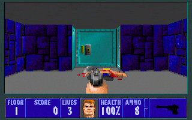

Ray casting is a methodological basis for solid modeling and image rendering used in computer graphics and computational geometry. Similar to ray tracing, ray casting operates by tracing rays over every pixel, or increment of an image rather than elements of a scene to render a 3D scene from a 2D image.
The general idea is to cast many rays out from the "eye" of the scene and find exactly where each ray first intersects with an object. Then, using some information like the rays length before intersection, and color of what the ray hit, etc, a 3D view can be constructed from nothing but a individual rays!
Ray casting was a very early image rendering method, and was a very brute force way of rendering 3D scenes. Ray casting can be used to created very complex 3D renders and images in things like solid modeling, but for this project, we are going to be focusing on another use of ray casting: the rendering of a 3D video game from a 2D playing field.
To the left is an example of ray casting being used in the 1992 release "Wolfenstein 3D". The game actually runs in two dimensions, but with the use of ray casting the game looks like a 3D first person game!
Throughout this project, we will build up and explain how an engine like this is made, until we finally end up with our own explorable maze!
Go to the link below to interact with a 2D grid with raycasters.
Use the arrow keys to move the dot and rays
2D Raycaster Gridadd blcok textures
game wip